C Programming: Functions
1. Working with a Function
a. Define Function
Q: What is a function in C?
A: A function is a self-contained block of code that performs a specific task. Functions enhance modularity and reusability in programs, allowing for easier maintenance and organization of code.
Explanation: Functions help avoid code repetition and make programs easier to debug and maintain. Each function should have a single, well-defined purpose.
b. Syntax of a Function
return_type function_name(parameter_list) {
// body of the function
}
This syntax defines a function's return type, name, and parameters. The body contains the code that executes when the function is called.
c. Types of Functions
- Library functions: Predefined functions such as
printf(), scanf(), sqrt(), etc., which are included in C libraries.
- User-defined functions: Functions created by the programmer to perform specific tasks, allowing for custom functionality in programs.
Explanation: Library functions save development time as they're pre-tested and optimized. User-defined functions allow you to create custom operations tailored to your program's specific needs.
d. Components of a Function
-
i. Function Prototype: Declares the function before
main(), allowing the compiler to recognize it.
int add(int, int);
Explanation: The prototype tells the compiler about the function's name, return type, and parameters before it's defined. This allows you to call the function before its actual definition in the code.
-
ii. Function Call: Invokes the function, executing its code.
add(5, 7);
Explanation: When a function is called, the program execution jumps to the function, executes its code, and then returns to the point where it was called.
-
iii. Function Definition: Actual body of the function where the logic is implemented.
int add(int a, int b) {
return a + b; // Returns the sum of a and b
}
Explanation: The definition contains the actual code that performs the function's task. It must match the prototype in return type, name, and parameters.
-
iv. Return Type: Specifies the type of value returned by the function (e.g.,
int, void, float).
Explanation: The return type determines what kind of data the function provides back to the calling code. If a function doesn't return anything, its return type should be void.
2. Categories of Functions with Examples
i. Function with Return Type but No Arguments
Q: What does it mean?
A: The function returns a value but takes no parameters, making it simple to use.
Explanation: These functions don't require any input but provide an output. They're useful when you need to generate or calculate values without external input.
#include <stdio.h>
int getAge(); // Function prototype
int main() {
int age = getAge(); // Calls getAge function to get age
printf("Naruto's age is: %d\n", age); // Prints the age
printf("The program is executed by Nayan Kumar Gautam\n");
return 0;
}
int getAge() {
return 17; // Returns the age of Naruto
}
Output Image
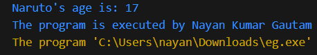
ii. Function with Return Type and with Arguments
Explanation: These functions take input parameters and return a value. They're the most common type of function, allowing for flexible and reusable code.
#include <stdio.h>
int power(int base, int exponent); // Function prototype
int main() {
printf("Sasuke's chakra power: %d\n", power(2, 4)); // Calls power function
printf("The program is executed by Nayan Kumar Gautam\n");
return 0;
}
int power(int base, int exponent) {
int result = 1; // Initialize result
for (int i = 0; i < exponent; i++) // Loop to calculate power
result *= base; // Multiply base for exponent times
return result; // Return the calculated power
}
Output Image
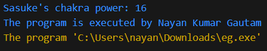
iii. Function with No Return Type and No Arguments
Explanation: These functions don't take input or return output. They're typically used for performing actions like printing messages or modifying global variables.
#include <stdio.h>
void greet(); // Function prototype
int main() {
greet(); // Calls greet function
printf("The program is executed by Nayan Kumar Gautam\n");
return 0;
}
void greet() {
printf("Namaste!\n"); // Prints greeting message
}
Output Image
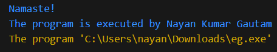
iv. Function with No Return Type but with Arguments
Explanation: These functions take input parameters but don't return a value. They're useful for performing actions that require input but don't need to provide output directly.
#include <stdio.h>
void displayInfo(char name[], int age); // Function prototype
int main() {
displayInfo("Kakashi", 30); // Calls displayInfo function with arguments
printf("The program is executed by Nayan Kumar Gautam\n");
return 0;
}
void displayInfo(char name[], int age) {
printf("%s's age is %d\n", name, age); // Prints name and age
}
Output Image
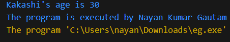
3. Storage Classes
Storage classes determine the scope, visibility, and lifetime of variables and functions.
i. Automatic (auto)
- Default storage class for local variables
- Variables are created when block is entered and destroyed when block is exited
- Must be initialized each time block is entered
Explanation: Auto variables are limited to the block where they're declared. They're created when the block is entered and destroyed when exiting, making them efficient for temporary storage.
#include <stdio.h>
void demoAuto() {
int x = 10; // same as just "int x = 10;"
printf("Auto x: %d\n", x);
x++;
}
int main() {
demoAuto(); // x=10
demoAuto(); // x=10 again (not 11)
printf("The program is executed by Nayan Kumar Gautam\n");
return 0;
}
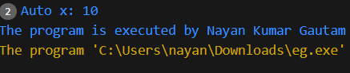
Features: Local scope, block lifetime, reinitialized each call
Drawback: Doesn't retain value between function calls
ii. External (extern)
- Used to declare global variables visible to all files
- Variables are defined outside any function
- Retain value throughout program execution
Explanation: Extern variables have global scope and exist for the entire program execution. They're accessible from any function in the program and even across multiple files.
#include <stdio.h>
int count; // External variable (global)
void increment() {
count++;
}
int main() {
printf("Initial count: %d\n", count); // 0 (default)
increment();
increment();
printf("Final count: %d\n", count); // 2
printf("The program is executed by Nayan Kumar Gautam\n");
return 0;
}
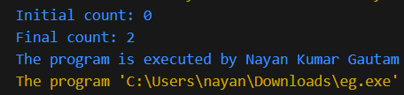
Features: Global scope, program lifetime, initialized to zero by default
Drawback: Can lead to naming conflicts in large programs
iii. Register
- Requests compiler to store variable in CPU register instead of RAM
- Faster access but limited number of registers available
- Can't use address operator (&) with register variables
#include <stdio.h>
int main() {
register int counter;
for(counter = 0; counter < 10000; counter++) {
// Fast access for frequently used variable
}
printf("Loop completed %d times\n", counter);
printf("The program is executed by Nayan Kumar Gautam\n");
return 0;
}
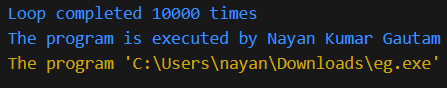
Features: Fast access, local scope
Drawback: Limited availability, no address can be taken
iv. Static
- Preserves variable value between function calls
- Initialized only once (default zero)
- Local static variables are visible only in their function
#include <stdio.h>
void Static() {
static int count = 0; // Initialized only once
count++;
printf("Static count: %d\n", count);
}
int main() {
Static(); // count=1
Static(); // count=2
Static(); // count=3
printf("The program is executed by Nayan Kumar Gautam\n");
return 0;
}
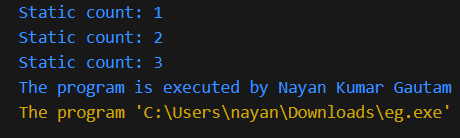
Features: Retains value between calls, local scope but program lifetime
Drawback: Can't be accessed outside its function despite long lifetime
4. Recursive Function
Q: What is recursion?
A: Recursion is when a function calls itself to solve a smaller instance of the same problem, often used for tasks like calculating factorials.
Explanation: Recursion is a technique where a function calls itself to solve smaller versions of the same problem. It requires a base case to stop the recursion and a recursive case that calls the function with modified parameters.
Example: Factorial using Recursion (Neji’s Computation)
#include <stdio.h>
int factorial(int n); // Function prototype
int main() {
int num = 5; // Number to calculate factorial
printf("Neji's factorial of %d is: %d\n", num, factorial(num)); // Calls factorial function
printf("The program is executed by Nayan Kumar Gautam\n");
return 0;
}
int factorial(int n) {
if (n == 0) // Base case
return 1; // Factorial of 0 is 1
else
return n * factorial(n - 1); // Recursive call
}
Output Image
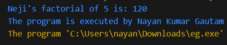
5. Demonstration of passing Passing Array to Function
#include <stdio.h>
void printScores(int scores[], int size); // Function prototype
int main() {
int scores[] = {100, 90, 85, 88}; // Array of scores
printScores(scores, 4); // Calls printScores function
printf("The program is executed by Nayan Kumar Gautam\n");
return 0;
}
void printScores(int scores[], int size) {
printf("Team 7 Scores:\n");
for (int i = 0; i < size; i++) // Loop through scores
printf("Score %d: %d\n", i + 1, scores[i]); // Print each score
}
Output Image
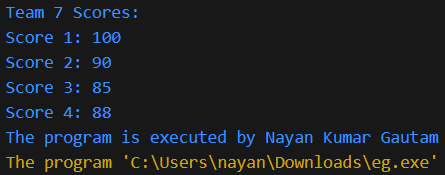
2D Array (2 × 2 Matrix) Example
#include <stdio.h>
void displayMatrix(int mat[2][2]) {
printf("Matrix elements:\n");
for (int i = 0; i < 2; i++) {
for (int j = 0; j < 2; j++) {
printf("%d ", mat[i][j]);
}
printf("\n");
}
}
int main() {
int matrix[2][2] = {{1, 2}, {3, 4}};
displayMatrix(matrix);
printf("The program is executed by Nayan Kumar Gautam\n");
return 0;
}
Output Image
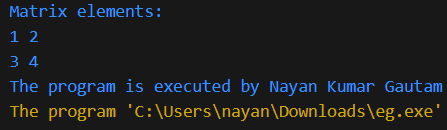
String Passing Example
#include <stdio.h>
void greet(char name[]) {
printf("Hello, %s!\n", name);
}
int main() {
char name[] = "Naruto";
greet(name);
printf("The program is executed by Nayan Kumar Gautam\n");
return 0;
}
Output Image
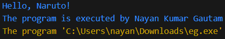
Reverse String Example
#include <stdio.h>
#include <string.h>
void reverseString(char str[]) {
int len = strlen(str);
printf("Reversed string: ");
for (int i = len - 1; i >= 0; i--) {
printf("%c", str[i]);
}
printf("\n");
}
int main() {
char name[] = "Sasuke";
reverseString(name);
printf("The program is executed by Nayan Kumar Gautam\n");
return 0;
}
Output Image
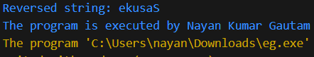
Function with Multiple Arguments and Return Value
#include <stdio.h>
int max(int a, int b, int c); // Function prototype
int main() {
printf("The strongest in Team 7 is: %d\n", max(100, 95, 110)); // Calls max function
printf("The program is executed by Nayan Kumar Gautam\n");
return 0;
}
int max(int a, int b, int c) {
int m = a; // Assume a is the maximum
if (b > m) m = b; // Update if b is greater
if (c > m) m = c; // Update if c is greater
return m; // Return the maximum value
}
Output Image
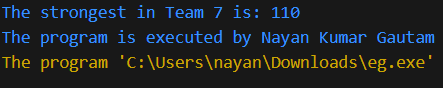
Function Pointer Example
#include <stdio.h>
void shout(char name[]) {
printf("%s says: Believe it!\n", name); // Prints a message
}
int main() {
void (*fptr)(char[]); // Function pointer declaration
fptr = shout; // Assign function to pointer
fptr("Naruto"); // Call function using pointer
printf("The program is executed by Nayan Kumar Gautam\n");
return 0;
}
Output Image
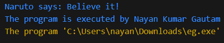
6. Passing Arguments
Call By Value
Definition: A copy of the actual parameter is passed to the function. Changes made to the parameter inside the function don't affect the original value.
#include <stdio.h>
void increment(int x) {
x = x + 1;
printf("Inside function: %d\n", x);
}
int main() {
int num = 5;
increment(num);
printf("Outside function: %d\n", num); // Output: 5 (unchanged)
printf("The program is executed by Nayan Kumar Gautam\n");
return 0;
}
Output Image
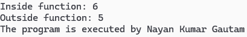
Call By Reference
Definition: Address of the variable is passed to the function. Changes made to the parameter affect the original value.
Explanation: In call by value, the function works with a copy of the argument. Any changes made to the parameter inside the function don't affect the original variable.
#include <stdio.h>
void increment(int *x) {
*x = *x + 1;
printf("Inside function: %d\n", *x);
}
int main() {
int num = 5;
increment(&num);
printf("Outside function: %d\n", num); // Output: 6 (changed)
printf("The program is executed by Nayan Kumar Gautam\n");
return 0;
}
Output:
Inside function: 6
Outside function: 6
The program is executed by Nayan Kumar Gautam
7. Variable and its Scope
Variable scope determines where in the program a variable can be accessed. Understanding scope is crucial for writing bug-free code and managing memory efficiently.
Local Variables
Definition: Declared inside a function or block. Accessible only within that function/block. Destroyed when function/block exits.
Local variables are created when the function is called and destroyed when the function exits. They are not accessible outside their function, which helps prevent unintended modifications from other parts of the program.
#include <stdio.h>
void demo() {
int localVar = 10; // Local variable
printf("%d\n", localVar);
}
int main() {
demo();
// printf("%d\n", localVar); // This would cause an error
printf("The program is executed by Nayan Kumar Gautam\n");
return 0;
}
10
The program is executed by Nayan Kumar Gautam
Global Variables
Definition: Declared outside all functions. Accessible throughout the program. Exist for entire program execution.
Global variables are declared outside any function and can be accessed from any part of the program. They persist for the entire duration of the program execution. While convenient, overuse of global variables can make code harder to debug and maintain.
#include <stdio.h>
int globalVar = 20; // Global variable
void demo() {
printf("Inside function: %d\n", globalVar);
}
int main() {
printf("In main: %d\n", globalVar);
demo();
printf("The program is executed by Nayan Kumar Gautam\n");
return 0;
}
In main: 20
Inside function: 20
The program is executed by Nayan Kumar Gautam
8. Storage Classes
Storage classes in C define the scope, visibility, and lifetime of variables. They determine how variables are stored in memory and accessed throughout the program.
Automatic (auto)
Definition: Default storage class for local variables. Variables are created when block is entered and destroyed when exited.
The 'auto' storage class is the default for all local variables. These variables are automatically created when the function is called and destroyed when the function exits. The 'auto' keyword is rarely used explicitly since it's the default.
#include <stdio.h>
void demo() {
auto int x = 10; // Same as: int x = 10;
printf("Auto x: %d\n", x);
}
int main() {
demo();
printf("The program is executed by Nayan Kumar Gautam\n");
return 0;
}
Auto x: 10
The program is executed by Nayan Kumar Gautam
External (extern)
Definition: Used to declare global variables that can be accessed across multiple files.
The 'extern' keyword is used to declare a global variable that is defined in another file. This allows you to share variables between multiple source files. The variable is declared in one file and can be accessed in others using 'extern'.
// file1.c
int count = 5; // Global variable
// file2.c
#include <stdio.h>
extern int count; // Reference to global variable in another file
int main() {
printf("Count: %d\n", count);
printf("The program is executed by Nayan Kumar Gautam\n");
return 0;
}
Count: 5
The program is executed by Nayan Kumar Gautam
Static
Definition: Preserves variable value between function calls. Variables exist for entire program execution.
The 'static' keyword causes a variable to retain its value between function calls. Static local variables are initialized only once and persist for the duration of the program. They are not destroyed when the function exits.
#include <stdio.h>
void counter() {
static int count = 0; // Retains value between calls
count++;
printf("Count: %d\n", count);
}
int main() {
counter(); // Count: 1
counter(); // Count: 2
counter(); // Count: 3
printf("The program is executed by Nayan Kumar Gautam\n");
return 0;
}
Count: 1
Count: 2
Count: 3
The program is executed by Nayan Kumar Gautam
Register
Definition: Suggests compiler to store variable in CPU register for faster access. Cannot use address operator (&) with register variables.
The 'register' keyword suggests to the compiler that the variable should be stored in a CPU register for faster access. However, the compiler may ignore this suggestion. Register variables cannot have their address taken using the & operator.
#include <stdio.h>
int main() {
register int x = 10; // May be stored in register
printf("Value: %d\n", x);
// printf("Address: %p\n", &x); // This would cause an error
printf("The program is executed by Nayan Kumar Gautam\n");
return 0;
}
Value: 10
The program is executed by Nayan Kumar Gautam
9. Function with Array
Definition: Arrays can be passed to functions by specifying the array name without brackets.
When passing arrays to functions, we actually pass a pointer to the first element of the array. This allows the function to modify the original array elements. The size of the array is typically passed as a separate parameter.
#include <stdio.h>
// Function to calculate average of array elements
float calculateAverage(int arr[], int size) {
int sum = 0;
for(int i = 0; i < size; i++) {
sum += arr[i];
}
return (float)sum / size;
}
int main() {
int numbers[] = {10, 20, 30, 40, 50};
int size = sizeof(numbers) / sizeof(numbers[0]);
float avg = calculateAverage(numbers, size);
printf("Average: %.2f\n", avg);
printf("The program is executed by Nayan Kumar Gautam\n");
return 0;
}
Average: 30.00
The program is executed by Nayan Kumar Gautam
10. Recursive Function
Recursion is a programming technique where a function calls itself to solve a smaller instance of the same problem. It's particularly useful for problems that can be broken down into similar subproblems.
Syntax
return_type function_name(parameters) {
// Base case
if (condition) {
return value;
}
// Recursive case
return function_name(modified_parameters);
}
Code Example
This example demonstrates calculating factorial using recursion. The base case is when n is 0 or 1, returning 1. The recursive case multiplies n by the factorial of n-1.
#include <stdio.h>
// Factorial using recursion
int factorial(int n) {
// Base case
if (n == 0 || n == 1) {
return 1;
}
// Recursive case
return n * factorial(n - 1);
}
int main() {
int num = 5;
printf("Factorial of %d is %d\n", num, factorial(num));
printf("The program is executed by Nayan Kumar Gautam\n");
return 0;
}
Factorial of 5 is 120
The program is executed by Nayan Kumar Gautam
Advantages
- Makes code cleaner and simpler for problems that can be broken down into similar subproblems
- Easy to implement for problems like tree traversals, Tower of Hanoi, etc.
Disadvantages
- Higher memory usage due to stack operations
- Can be slower than iterative solutions
- Risk of stack overflow for deep recursion
11. Structure and Union: Structure
Structures allow you to combine data items of different kinds. They are used to represent a record, making it easier to handle related data elements.
Introduction and Syntax
Structures are user-defined data types that group related variables of different types. The 'struct' keyword is used to define a structure, which can then be used to create variables of that type.
struct Student {
int rollNo;
char name[50];
float marks;
};
Structure Size
Note: The size of a structure may be larger than the sum of its members due to padding for alignment.
Structure padding is added by the compiler to align data for efficient access. The actual size of a structure can be determined using the sizeof operator and may be larger than the sum of its members due to this padding.
#include <stdio.h>
struct Example {
int a; // 4 bytes
char b; // 1 byte
float c; // 4 bytes
}; // Total size may be 12 bytes due to padding
int main() {
printf("Size of struct Example: %lu bytes\n", sizeof(struct Example));
printf("The program is executed by Nayan Kumar Gautam\n");
return 0;
}
Size of struct Example: 12 bytes
The program is executed by Nayan Kumar Gautam
Accessing Members of Structure
Structure members are accessed using the dot (.) operator. Each member can be accessed and manipulated individually, allowing for organized data handling.
#include <stdio.h>
#include <string.h>
struct Student {
int rollNo;
char name[50];
float marks;
};
int main() {
struct Student s1;
s1.rollNo = 101;
strcpy(s1.name, "John");
s1.marks = 85.5;
printf("Roll No: %d\n", s1.rollNo);
printf("Name: %s\n", s1.name);
printf("Marks: %.2f\n", s1.marks);
printf("The program is executed by Nayan Kumar Gautam\n");
return 0;
}
Roll No: 101
Name: John
Marks: 85.50
The program is executed by Nayan Kumar Gautam
Nested Structure
A structure can contain another structure as its member. This is called nesting of structures and allows for more complex data organization.
#include <stdio.h>
struct Address {
char city[50];
char state[50];
};
struct Employee {
int id;
char name[50];
struct Address addr; // Nested structure
};
int main() {
struct Employee emp = {101, "Alice", {"New York", "NY"}};
printf("ID: %d\n", emp.id);
printf("Name: %s\n", emp.name);
printf("City: %s\n", emp.addr.city);
printf("State: %s\n", emp.addr.state);
printf("The program is executed by Nayan Kumar Gautam\n");
return 0;
}
ID: 101
Name: Alice
City: New York
State: NY
The program is executed by Nayan Kumar Gautam
Array of Structure
You can create arrays of structures to handle multiple records of the same type. This is useful for representing collections of similar data items.
#include <stdio.h>
struct Student {
int rollNo;
char name[50];
float marks;
};
int main() {
struct Student class[3];
for(int i = 0; i < 3; i++) {
printf("Enter details for student %d:\n", i+1);
printf("Roll No: ");
scanf("%d", &class[i].rollNo);
printf("Name: ");
scanf("%s", class[i].name);
printf("Marks: ");
scanf("%f", &class[i].marks);
}
// Display all students
for(int i = 0; i < 3; i++) {
printf("\nStudent %d: Roll No: %d, Name: %s, Marks: %.2f\n",
i+1, class[i].rollNo, class[i].name, class[i].marks);
}
printf("The program is executed by Nayan Kumar Gautam\n");
return 0;
}
Enter details for student 1:
Roll No: 101
Name: John
Marks: 85.5
Enter details for student 2:
Roll No: 102
Name: Jane
Marks: 90.0
Enter details for student 3:
Roll No: 103
Name: Bob
Marks: 78.5
Student 1: Roll No: 101, Name: John, Marks: 85.50
Student 2: Roll No: 102, Name: Jane, Marks: 90.00
Student 3: Roll No: 103, Name: Bob, Marks: 78.50
The program is executed by Nayan Kumar Gautam
Passing Structure to Function
Structures can be passed to functions either by value or by reference. Passing by reference is more efficient for large structures as it avoids copying the entire structure.
#include <stdio.h>
struct Student {
int rollNo;
char name[50];
float marks;
};
void displayStudent(struct Student s) {
printf("Roll No: %d\n", s.rollNo);
printf("Name: %s\n", s.name);
printf("Marks: %.2f\n", s.marks);
}
void modifyStudent(struct Student *s) {
s->marks += 5; // Increase marks by 5
}
int main() {
struct Student s1 = {101, "Bob", 75.5};
printf("Before modification:\n");
displayStudent(s1);
modifyStudent(&s1);
printf("\nAfter modification:\n");
displayStudent(s1);
printf("The program is executed by Nayan Kumar Gautam\n");
return 0;
}
Before modification:
Roll No: 101
Name: Bob
Marks: 75.50
After modification:
Roll No: 101
Name: Bob
Marks: 80.50
The program is executed by Nayan Kumar Gautam
Comparison between Call by Value and Call by Reference
| Aspect |
Call by Value |
Call by Reference |
| Parameter |
Copy of value |
Address of variable |
| Changes |
Not reflected in original |
Reflected in original |
| Memory |
More (creates copy) |
Less (uses address) |
| Safety |
More (original safe) |
Less (original can be modified) |
Call by Value Example
#include <stdio.h>
void modifyValue(int num) {
num = num + 10;
printf("Inside function: %d\n", num);
}
int main() {
int x = 5;
printf("Before function call: %d\n", x);
modifyValue(x);
printf("After function call: %d\n", x);
return 0;
}
Output:
Before function call: 5
Inside function: 15
After function call: 5
Explanation:
In call by value, a copy of the variable is passed to the function.
Any changes made to the parameter inside the function do not affect the original variable.
Call by Reference Example
#include <stdio.h>
void modifyReference(int *num) {
*num = *num + 10;
printf("Inside function: %d\n", *num);
}
int main() {
int x = 5;
printf("Before function call: %d\n", x);
modifyReference(&x);
printf("After function call: %d\n", x);
return 0;
}
Output:
Before function call: 5
Inside function: 15
After function call: 15
Explanation:
In call by reference, the memory address of the variable is passed to the function.
Changes made to the value at that address affect the original variable.
Pointers with Arrays
Introduction
Pointers and arrays have a close relationship in C. An array name is essentially a constant pointer to the first element of the array.
Code Example
#include <stdio.h>
int main() {
int arr[5] = {10, 20, 30, 40, 50};
int *ptr = arr; // ptr points to the first element of arr
printf("Array elements using pointer:\n");
for(int i = 0; i < 5; i++) {
printf("arr[%d] = %d\n", i, *(ptr + i));
}
return 0;
}
Output:
Array elements using pointer:
arr[0] = 10
arr[1] = 20
arr[2] = 30
arr[3] = 40
arr[4] = 50
Explanation:
The pointer 'ptr' is initialized to point to the first element of the array.
Using pointer arithmetic (ptr + i), we can access each element of the array.
Advantages
- Efficient access to array elements
- Dynamic memory allocation for arrays
- Ability to pass arrays to functions efficiently
- Enables pointer arithmetic for array traversal
Disadvantages
- Potential for pointer arithmetic errors
- Easy to access out-of-bounds memory
- Can lead to difficult-to-debug issues
- Requires careful memory management
Structure and Union
Structure: Introduction and Syntax
A structure is a user-defined data type that groups related variables of different data types.
Syntax
struct structure_name {
data_type member1;
data_type member2;
// ...
};
Structure Size
The size of a structure is the sum of sizes of all its members, plus possible padding added by the compiler for alignment.
Accessing Members of Structure
#include <stdio.h>
#include <string.h>
struct Student {
int id;
char name[50];
float percentage;
};
int main() {
struct Student student1;
// Accessing structure members
student1.id = 101;
strcpy(student1.name, "John Doe");
student1.percentage = 85.5;
printf("Student ID: %d\n", student1.id);
printf("Student Name: %s\n", student1.name);
printf("Percentage: %.2f\n", student1.percentage);
return 0;
}
Output:
Student ID: 101
Student Name: John Doe
Percentage: 85.50
Explanation:
This example demonstrates how to declare a structure, create a structure variable,
and access its members using the dot operator.
Nested Structure
#include <stdio.h>
struct Address {
char city[50];
char state[50];
};
struct Employee {
int id;
char name[50];
struct Address addr; // Nested structure
};
int main() {
struct Employee emp1 = {101, "Alice", {"New York", "NY"}};
printf("Employee ID: %d\n", emp1.id);
printf("Employee Name: %s\n", emp1.name);
printf("City: %s\n", emp1.addr.city);
printf("State: %s\n", emp1.addr.state);
return 0;
}
Output:
Employee ID: 101
Employee Name: Alice
City: New York
State: NY
Explanation:
A nested structure is a structure within another structure.
Here, the Address structure is nested inside the Employee structure.
Array of Structure
#include <stdio.h>
struct Book {
int id;
char title[100];
float price;
};
int main() {
struct Book library[3];
// Input books information
for(int i = 0; i < 3; i++) {
printf("Enter book %d details:\n", i+1);
printf("ID: ");
scanf("%d", &library[i].id);
printf("Title: ");
scanf("%s", library[i].title);
printf("Price: ");
scanf("%f", &library[i].price);
}
// Display books information
printf("\nLibrary Books:\n");
for(int i = 0; i < 3; i++) {
printf("Book %d: ID=%d, Title=%s, Price=%.2f\n",
i+1, library[i].id, library[i].title, library[i].price);
}
return 0;
}
Output (example):
Enter book 1 details:
ID: 101
Title: C_Programming
Price: 45.50
Enter book 2 details:
ID: 102
Title: Data_Structures
Price: 55.75
Enter book 3 details:
ID: 103
Title: Algorithms
Price: 60.25
Library Books:
Book 1: ID=101, Title=C_Programming, Price=45.50
Book 2: ID=102, Title=Data_Structures, Price=55.75
Book 3: ID=103, Title=Algorithms, Price=60.25
Explanation:
This example shows how to create an array of structures.
Each element of the array is a structure that can store multiple data types.
Passing Structure to Function
#include <stdio.h>
struct Point {
int x;
int y;
};
// Function to display point
void displayPoint(struct Point p) {
printf("Point coordinates: (%d, %d)\n", p.x, p.y);
}
// Function to modify point (using pointer)
void modifyPoint(struct Point *p, int x, int y) {
p->x = x;
p->y = y;
}
int main() {
struct Point p1 = {5, 10};
displayPoint(p1); // Pass by value
modifyPoint(&p1, 15, 20); // Pass by reference
displayPoint(p1);
return 0;
}
Output:
Point coordinates: (5, 10)
Point coordinates: (15, 20)
Explanation:
Structures can be passed to functions by value or by reference.
When passed by value, a copy is created. When passed by reference using pointers,
the original structure can be modified.
Union: Introduction and Syntax
A union is a user-defined data type that allows storing different data types in the same memory location.
Syntax
union union_name {
data_type member1;
data_type member2;
// ...
};
Union Example
#include <stdio.h>
union Data {
int i;
float f;
char str[20];
};
int main() {
union Data data;
data.i = 10;
printf("data.i : %d\n", data.i);
data.f = 220.5;
printf("data.f : %.2f\n", data.f);
strcpy(data.str, "C Programming");
printf("data.str : %s\n", data.str);
// Displaying all values after latest assignment
printf("data.i : %d\n", data.i); // Undefined behavior
printf("data.f : %.2f\n", data.f); // Undefined behavior
printf("data.str : %s\n", data.str);
return 0;
}
Output (example):
data.i : 10
data.f : 220.50
data.str : C Programming
data.i : 1917853763
data.f : 4120370580352792500000000000000.00
data.str : C Programming
Explanation:
A union uses the same memory location for all its members.
Only one member can contain a value at any given time.
The values of other members become undefined when a new member is assigned a value.
Comparison between Structure and Union
| Feature |
Structure |
Union |
| Memory |
Each member has its own memory |
All members share the same memory |
| Size |
Sum of sizes of all members (plus padding) |
Size of the largest member |
| Access |
All members can be accessed at any time |
Only one member can be accessed at a time |
| Use Case |
Group related data of different types |
Memory efficient when only one member is needed at a time |
Pointers: Introduction and Syntax
A pointer is a variable that stores the memory address of another variable.
Syntax
data_type *pointer_name;
Usage and Working
Pointers are used for:
- Dynamic memory allocation
- Efficient array handling
- Implementing data structures
- Function arguments (call by reference)
Concept of Value and Address
Every variable has an address in memory where its value is stored. A pointer holds this address.
Declaration and Initialization
#include <stdio.h>
int main() {
int num = 10; // Integer variable
int *ptr; // Pointer declaration
ptr = # // Pointer initialization with address of num
printf("Value of num: %d\n", num);
printf("Address of num: %p\n", &num);
printf("Value of ptr: %p\n", ptr);
printf("Value pointed by ptr: %d\n", *ptr);
return 0;
}
Output (example):
Value of num: 10
Address of num: 0x7ffd42a4a24c
Value of ptr: 0x7ffd42a4a24c
Value pointed by ptr: 10
Explanation:
The pointer 'ptr' stores the memory address of the variable 'num'.
The dereference operator (*) is used to access the value at that address.
Pointer and Function
#include <stdio.h>
// Function using pointers
void swap(int *a, int *b) {
int temp = *a;
*a = *b;
*b = temp;
}
int main() {
int x = 5, y = 10;
printf("Before swap: x = %d, y = %d\n", x, y);
swap(&x, &y); // Passing addresses
printf("After swap: x = %d, y = %d\n", x, y);
return 0;
}
Output:
Before swap: x = 5, y = 10
After swap: x = 10, y = 5
Explanation:
By passing pointers to the function, we can modify the original variables.
This is an example of call by reference.
Call by Reference with Code Example
#include <stdio.h>
// Function to modify value using call by reference
void increment(int *num) {
(*num)++; // Increment the value at the address
}
int main() {
int value = 5;
printf("Before increment: %d\n", value);
increment(&value); // Pass address of value
printf("After increment: %d\n", value);
return 0;
}
Output:
Before increment: 5
After increment: 6
Explanation:
The function increment() receives a pointer to the variable.
By dereferencing the pointer, it can modify the original value.
File Handling
Concept of Data File
A data file is a collection of related records stored in secondary storage. It provides persistent storage beyond program execution.
Need for File Handling in C
- Persistence: Data remains after program termination
- Large data storage: Handle data too large for memory
- Data sharing: Multiple programs can access the same data
- Backup and recovery: Data can be saved and restored
Sequential and Random Files
| Sequential Files |
Random Files |
| Data accessed in sequential order |
Data accessed in any order directly |
| Slower for large files |
Faster access to specific records |
| Simple to implement |
More complex implementation |
| Suitable for streaming data |
Suitable for database-like operations |
File Handling Example
#include <stdio.h>
int main() {
FILE *file;
char data[100];
// Writing to a file
file = fopen("example.txt", "w");
if (file == NULL) {
printf("Error opening file!\n");
return 1;
}
fprintf(file, "Hello, File Handling in C!\n");
fclose(file);
// Reading from a file
file = fopen("example.txt", "r");
if (file == NULL) {
printf("Error opening file!\n");
return 1;
}
fgets(data, 100, file);
printf("Data from file: %s", data);
fclose(file);
return 0;
}
Output:
Data from file: Hello, File Handling in C!
Explanation:
This example demonstrates basic file operations: writing to a file using fprintf()
and reading from a file using fgets(). The file is opened in write mode ("w") first,
then in read mode ("r").
File Handling Functions
fopen()
Purpose: Opens a file for reading, writing, or appending.
Syntax: FILE *fopen(const char *filename, const char *mode);
fclose()
Purpose: Closes an opened file.
Syntax: int fclose(FILE *stream);
getc()
Purpose: Reads a character from a file.
Syntax: int getc(FILE *stream);
putc()
Purpose: Writes a character to a file.
Syntax: int putc(int char, FILE *stream);
fprintf()
Purpose: Writes formatted output to a file.
Syntax: int fprintf(FILE *stream, const char *format, ...);
fscanf()
Purpose: Reads formatted input from a file.
Syntax: int fscanf(FILE *stream, const char *format, ...);
getw()
Purpose: Reads an integer from a file.
Syntax: int getw(FILE *stream);
putw()
Purpose: Writes an integer to a file.
Syntax: int putw(int num, FILE *stream);
fgets()
Purpose: Reads a string from a file.
Syntax: char *fgets(char *str, int n, FILE *stream);
fputs()
Purpose: Writes a string to a file.
Syntax: int fputs(const char *str, FILE *stream);
fread()
Purpose: Reads data from a file into a block of memory.
Syntax: size_t fread(void *ptr, size_t size, size_t nmemb, FILE *stream);
fwrite()
Purpose: Writes data from a block of memory to a file.
Syntax: size_t fwrite(const void *ptr, size_t size, size_t nmemb, FILE *stream);
remove()
Purpose: Deletes a file.
Syntax: int remove(const char *filename);
rename()
Purpose: Renames a file.
Syntax: int rename(const char *old_filename, const char *new_filename);